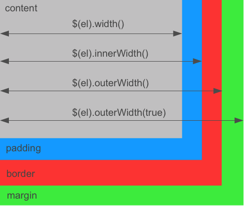

Welcome to jQuery++
jQuery++ is a collection of useful jQuery extensions and events.
They are organized in two broad categories:
- DOM Helpers - helpers to work with DOM function or improve jQuery performance
- Events - jQuery special events
Get jQuery++
Download Builder
Check the files you want to download and a zip file will be created. The zip file will contain each individual plugin, and a combined version of all plugins minified and unminified.
Using Steal
Add these to your jQuery folder:
Using AMD
require(‘jquery/compare’)
DOM HELPERS
compare $(elA).compare(elB) -> Number
jQuery.compare adds $.fn.compare to compare the position of two nodes. It returns a number that represents a bitmask showing how they are positioned relative to each other. The following list shows the bitmask, the number and what it means for a $.fn.compare call like $('#foo').compare($('#bar')):
000000-> 0: Elements are identical000001-> 1: The nodes are in different documents (or one is outside of a document)000010-> 2: #bar precedes #foo000100-> 4: #foo precedes #bar001000-> 8: #bar contains #foo010000-> 16: #foo contains #bar
You can tell if #foo precedes #bar like:
if( $('#foo').compare($('#bar')) & 4 ) {
console.log("#foo preceds #bar");
}
This is useful to rapidly compare element positions which is common when widgets can reorder themselves (drag-drop) or with nested widgets (trees).
cookie $.cookie(name, [value], [options]) -> Object|String
jQuery.cookie packages Klaus Hartl’s jQuery cookie plugin for manipulating cookies. Use it like:
// Set a session cookie
$.cookie('the_cookie', 'the_value');
$.cookie('the_cookie') // -> 'the_value'
// Set a cookie that expires in 7 days
$.cookie('the_cookie', 'the_value', { expires: 7 });
// delete the cookie
$.cookie('the_cookie', null);
The following options are available:
expires- the expiration time in days or an expiry datedomain- the domain namepath- the value of the path for the cookiesecure- if the cookie requires HTTPS
dimensions
jQuery.dimensions overwrites $.fn.innerWidth, $.fn.outerWidth, $.fn.innerHeight, $.fn.outerHeight and enables $.fn.animate to animate these values. Inner dimensions include the padding where outer dimensions also take care of borders and margins (if includeMargin is set to true). Set and read these values using:
$(el).innerHeight([height])$(el).outerHeight([height], [includeMargin])$(el).innerWidth([width])$(el).outerWidth([width], [includeMargin])
And use $(el).animate({ innerHeight : 100 }) to animate them. This is useful when you care about animating/setting the visual dimension of an element (which is what you typically want to do):
$('#foo').outerWidth(100).innerHeight(50);
$('#bar').animate({outerWidth: 500});
The following graphic shows which dimensions are included for $(el).width(), $(el).innerWidth() and $(el).outerWidth():

formParams $(form).formParams([convert]) -> Object|jQuery
jQuery.formParams adds $.fn.formParams which serializes a form into a JavaScript object. It creates nested objects by using bracket notation in the form element name. If convert is true, values that look like numbers or booleans will be converted and empty strings won’t be added to the object. For a form like this:
<form>
<input type="text" name="first" value="John" />
<input type="text" name="last" value="Doe" />
<input type="text" name="phone[mobile]" value="1234567890" />
<input type="text" name="phone[home]" value="0987654321" />
</form>
$.fn.formParams returns:
$('form').formParams()
// -> {
// first : "John", last : "Doe",
// phone : { mobile : "1234567890", home : "0987654321" }
// }
It is also possible to set form values:
$('form').formParams({
first : 'Mike',
last : 'Smith'
});
range $.Range([el]) -> range $(el).range() -> range
jQuery.Range helps creating, moving and comparing text ranges. Use $.Range().current() to get the currently selected text range or the jQuery plugin $(el).range() to get a $.Range instance from an element. For example, assuming that in a div like <div>This is some text</div> the text from position eight to 12 is currently selected, $.Range can be used like this:
var range = $.Range.current();
// Returns the currently selected text
range.toString() // -> some
// Get the beginning of the range
range.start() // -> { offset : 8, container : TextNode }
// Get the end of the range
range.end() // -> { offset : 12, container : TextNode }
// Get the selections common parent
range.parent() // -> TextNode
// Set the range start offset to 4
range.start(4);
A $.Range instance offers the following methods:
range.clone() -> range- clones the range and returns a new $.Range objectrange.collapse([toStart]) -> range- clones the range and returns a new$.Rangeobjectrange.compare(other) -> Number- compares one range to another rangerange.end([val]) -> range|Object- sets or returns the end of the rangerange.move(type, referenceRange) -> range- move the endpoints of a range relative to another rangerange.overlaps(other) -> Boolean- returns if any portion of these two ranges overlaprange.parent() -> HtmlElement|Element|Node- returns the most common ancestor element of the endpoints in the rangerange.rect(from) -> TextRectangle- returns the bounding rectangle of this rangerange.rects(from) -> undefined- returns the client rectsrange.start([val]) -> range|Object- sets or returns the beginning of the rangerange.toString() -> String- returns the text of the range
selection $(el).selection([start], [end]) -> Object|jQuery
jQuery.selection adds $.fn.selection to set or retrieve the currently selected text range. It works on all elements:
<div id="text">This is some text</div>
// Make a selection in #text from position eight to 12
$('#text').selection(8, 12);
var selection = $('#text').selection();
// -> { start : 8, end : 12 }
$('#text').text().substring(selection.start, selection.end) // -> some
The following example shows how $.fn.selection can be used. Initially the selection is set from position eight to 12. You can change the selection in the highlighted area and the status text will be updated:
styles $(el).styles() -> Object
jQuery.styles adds $.fn.styles as a fast way of getting a set of computed styles from an element. It performs a lot faster than retrieving them individually e.g. by using jQuery.css(). Computed styles reflect the actual current style of an element, including browser defaults and CSS settings.
$("#foo").styles('float','display')
// -> { cssFloat: "left", display: "block" }
within $(el).within(left, top, [useOffsetCache]) -> jQuery
jQuery.within adds $.fn.within and $.fn.withinBox that return all elements having a given position or area in common. The following example returns all div elements having the point 200px left and 200px from the top in common:
$('div').within(200, 200)
Use $(el).withinBox(left, top, width, height) to get all elements within a certain area:
$('*').withinBox(200, 200, 100, 100)
jQuery.event.drag uses $.within to determine dropable elements at the current position.
EVENTS
destroyed destroyed
The destroyed event is triggered by jQuery.event.destroyed when the element is removed from the DOM using one of the jQuery manipulation methods.
$('form').on('destroyed', function() {
// Clean up when a form element has been removed
});
Note: The destroyed event does not bubble.
drag dragdown draginit dragmove dragend dragover dragout
jQuery.event.drag adds delegatable drag events to jQuery:
dragdown- the mouse cursor is pressed downdraginit- the drag motion is starteddragmove- the drag is moveddragend- the drag has endeddragover- the drag is over a drop pointdragout- the drag moved out of a drop point
An element will become draggable by attaching an event listener for one of these events on it. A draggable div that can only be moved horizontally can be initialized like this:
$('div').on('draginit', function(event, drag) {
drag.horizontal();
});
The drag object (passed to the event handler as the second parameter) can be used to modify the drag behavior:
drag.cancel()- stops the drag motion from happeningdrag.ghost() -> jQuery- copys the draggable and drags the cloned elementdrag.horizontal() -> Boolean- limits the scroll to horizontal movementdrag.only([only]) -> Boolean- only have drags, no dropsdrag.representative(element, offsetX, offsetY)- move another element in place of this elementdrag.revert(val) -> drag- animate the drag back to its positiondrag.step(pixels) -> drag- makes the drag move in steps of amount pixelsdrag.vertical()- limit the drag to vertical movementdrag.limit(container, center) -> drag- limit the drag within an elementdrag.scrolls(elements, options)- scroll scrollable areas when dragging near their boundaries
drop dropinit dropover dropout dropmove dropon dropend
jQuery.event.drop complements jQuery.event.drag with delegatable drop events:
dropinit- the drag motion is started, drop positions are calculateddropover- a drag moves over a drop element, called once as the drop is dragged over the elementdropout- a drag moves out of the drop elementdropmove- a drag is moved over a drop element, called repeatedly as the element is moveddropon- a drag is released over a drop elementdropend- the drag motion has completed
The following example adds the highlight class when a drag is moved over the element and removes it when it leaves:
$('.drop').on({
"dropover" : function(ev, drop, drag){
$(this).addClass('highlight');
},
"dropout" : function(ev, drop, drag){
$(this).removeClass('highlight');
}
});
The drop object offers the following methods:
drop.cancel()- prevents this drop from being dropped ondrop.cache()- call ondropinitto cache the position of draggable elementsdrop.compile()- get all droppable elements and put them into a list. This will be called ondropinitby default. If new droppable elements are added afterdropinit, compile has to be called explicitly.
hover hoverinit hoverenter hovermove hoverleave
jQuery.event.hover is a flexible way to deal with the following hover related events:
hoverinit- called on mouseenterhoverenter- an element is being hoveredhovermove- the mouse moves on an element that has been hoveredhoverleave- the mouse leaves the hovered element
$('li.menu').on({
hoverenter : function(){
$(this).addClass("hovering");
},
hoverleave : function(){
$(this).removeClass("hovering");
}
});
An element is hovered when the mouse moves less than a certain distance in a specific time over the element. These values can be modified either globally by setting $.Hover.delay and $.Hover.distance or individually during hoverinit:
$(".option").on("hoverinit", function(ev, hover){
//set the distance to 10px
hover.distance(10);
//set the delay to 200ms
hover.delay(200);
})
key event.keyName()
jQuery.event.key adds a .keyName() method to the event object that returns a string representation of the current key:
$("input").on('keypress', function(ev){
// Don't allow backspace keys
if(ev.keyName() == '\b') {
ev.preventDefault();
}
if(ev.keyName() == 'f1') {
alert('I could be a tooltip for help');
}
});
The following key names are mapped by default:
\b- backspace\t- tab\r- enter keyshift,ctrl,altpause-break,caps,escape,num-lock,scroll-loc,printpage-up,page-down,end,home,left,up,right,down,insert,delete' '- space0-9- number key presseda-z- alpha key pressednum0-9- number pad key pressedf1-12- function keys pressed- Symbols:
/,;,:,=,,,-,.,/,[,\,],',"
pause
jQuery.event.pause adds a default event handler, event.pause() and event.resume() for pausing and resuming event propagation and $.fn.triggerAsync for triggering an event asynchronously and executing a callback when propagation is finished.
default events eventname.default
jQuery.even.default adds default event handlers. A default event runs when all other event handlers have been triggered and none has called event.preventDefault() or returned false. Default events are prefixed with the default namespace. The following example adds a default toggle event:
$('#text').on('toggle.default', function(ev) {
$(this).toggle();
});
$('#text').on('toggle', function(ev, animation) {
if(animation) {
$(this).toggle(animation);
ev.preventDefault();
}
});
triggerAsync $(el).triggerAsync(event, [success], [prevented])
jQuery.fn.triggerAsync triggers an event and calls a success handler when it has finished propagating through the DOM and no handler called event.preventDefault() or returned false. The prevented callback will be used otherwise:
$('panel').triggerAsync('show', function(){
$('#panel').show();
},function(){
$('#other').addClass('error');
});
pause and resume event.pause() event.resume()
Pausing an event works similar to .stopImmediatePropagation() by calling event.pause(). Calling event.resume() will continue propagation. This is great when doing asynchronous processing in an event handler:
$('#todos').on('show', function(ev){
ev.pause();
$(this).load('todos.html', function(){
ev.resume();
});
});
resize resize
jQuery.event.resize adds the resize event which is very useful for resizing a specific element whenever the parents dimension changes. Unlike other events that bubble from the target element to the document the resize event will propagate from the outside-in. This means that outside elements will always resize first.
// TODO Descibe and link JS Fiddle exampleThe following example will always resize to it’s full parent width and height
$('#foo').on('resize', function(){
var parent = $(this).parent();
$(this).width(parent.width()).height(parent.height());
})
$(document.body).resize();
swipe swipeleft swiperight swipeup swipedown swipe
jQuery.event.swipe adds support for swipe motions providing the swipeleft, swiperight, swipedown, swipeup and a general swipe event:
$('#swiper').on({
'swipe' : function(ev) {
console.log('Swiping');
},
'swipeleft' : function(ev) {
console.log('Swiping left');
},
'swiperight' : function(ev) {
console.log('Swiping right');
},
'swipeup' : function(ev) {
console.log('Swiping up');
},
'swipedown' : function(ev) {
console.log('Swiping down');
}
});
Set jQuery.event.swipe.delay to the maximum time the swipe motion is allowed to take (default is 500ms).
Get Help
There are several places you can go to ask questions or get help debugging problems.
Follow @donejs for updates, announcements and quick answers to your questions.
Forums
Visit the Forums for questions requiring more than 140 characters. DoneJS has a thriving community that’s always eager to help out.
IRC
The DoneJS IRC channel (#donejs on irc.freenode.net) is an awesome place to hang out with fellow DoneJS users and get your questions answered quickly.
Help Us Help You
Help the community help you by using the jQuery++ jsFiddle template below. Just fork it and include the URL when you are asking for help.
Get Help from Bitovi
Bitovi (developers of jQuery++) offers training and consulting for your team. They can also provide private one-on-one support staffed by their JavaScript/Ajax experts. Contact Bitovi if you’re interested.
Why jQuery++
Developing jQuery++
To develop jQuery++, add features, etc, you first must install DoneJS. DoneJS is the parent project of jQuery++ and the 4.0 version of JavaSciptMVC. It has DocumentJS and Steal as submodules that are used to generate the documentation and build the jQuery++ downloads.
Installing
-
forkjquerypp on github. -
Clone DoneJS with:
git clone git@github.com:jupiterjs/donejs -
Open the donejs folder’s .gitmodule file and change the URL of the
"jquery"submodule:url = git://github.com/jupiterjs/jquerypp.gitto your
forked URL likeurl = git://github.com/justinbmeyer/jquerypp.git -
Install all submodules by running
cd donejs git submodule update --init --recursiveDepending on your version of git, you might need to cd into each submodule and run
git checkout.
Developing
After installing jQuery++ and DoneJS, you’ll find the jQuery++ files in the jquery folder. Within jquery, the plugins are located in the dom and event folders. The controller, model, class and view folder are currently kept for backwards compatibility with JavaScriptMVC 3.2/3.3 and shouldn’t be modified. For each plugin (for example jquery/dom/compare) you will find:
compare.html- A demo pagecompare.js- The actual commented and uncompressed source codecompare.md- The overview page (used in the generated documentation)compare_test.js- The plugin testsqunit.html/funcunit.html- The unit and/or functional tests
To develop jQuery++:
- Edit the plugin’s file.
- Add tests to the plugin_test.js test file.
- Open the full test page in
jquery/qunit.htmland make sure your tests are included and everything still passes. - Submit a pull request!
Documentation
To edit jquerypp.com, installing jQuery++ and DoneJS is not necessary. Simply fork and edit the github pages’s index.md page online. Don’t forget to submit a pull request.
To edit the documentation at DoneJS.com:
-
install jQuery++ and DoneJS.
-
Edit the markdown and js files in the
jqueryfolder. -
Generate the docs with:
js site/scripts/doc.jsView them at
site/docs.html -
Submit a pull request.
Making a build
To make a jQuery++ build, run:
js jquery/build/make.jsIt puts the downloads in jquery/dist. To build a specific version check out the git tag you want to build and run the above command.